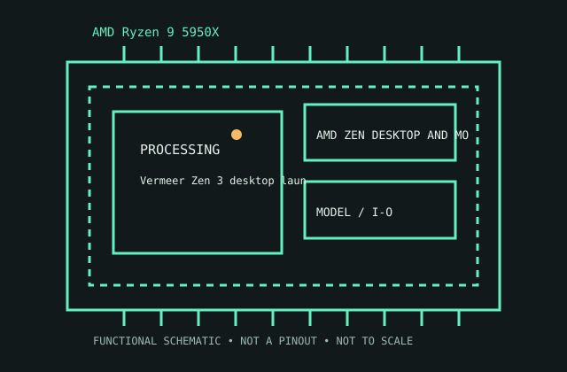

[ AMD ZEN DESKTOP AND MOBILE PROCESSORS // IDENTIFIED CPU ]
AMD Ryzen 9 5950X
Vermeer Zen 3 desktop launched 2020. 16 cores/32 threads; 3.4/4.9 GHz base/max; 72 MB total cache; 105 W; AM4/DDR4; no iGPU.

MODEL IDENTIFICATION: AMD Ryzen 9 5950X. Match full model suffix, stepping and package to the physical item and cited documentation.
Recorded specifications
| Cataloged model | AMD Ryzen 9 5950X |
|---|---|
| Era / family | Vermeer Zen 3 desktop launched 2020. |
| Model specifications | 16 cores/32 threads; 3.4/4.9 GHz base/max; 72 MB total cache; 105 W; AM4/DDR4; no iGPU. |
| Compatibility | AM4 board BIOS/AGESA, VRM and cooler; CPU support list applies. |
| Variants / limits | 16-core Vermeer; not 12-core 5900X or AM5 7950X. |
Compatibility and variants
- AM4 board BIOS/AGESA, VRM and cooler; CPU support list applies.
- 16-core Vermeer; not 12-core 5900X or AM5 7950X.
- Check system-vendor CPU support, board revision, firmware minimum, package, memory, cooling and power before installation; similar socket naming does not prove compatibility.
Service and archival notes
Record OPN, BIOS, memory profile and cooling.
Archive the complete marking/OPN/sSpec, stepping, physical condition, tested host revision, firmware, memory population, cooling, and test conditions. Distinguish published limits from measurements.
Sources & further reading
- Model identification/specification search — AMD Ryzen 9 5950XModel-level part identification and specification cross-reference.
- AMD technical archive — AMD Ryzen 9 5950X product familyAMD-authored processor data books and family specifications.
- AMD product-history reference — AMD Ryzen 9 5950XManufacturer history reference for product-family context.
Use the matching manufacturer data sheet revision and platform vendor’s CPU list for final fit decisions.